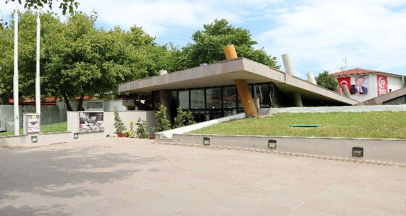
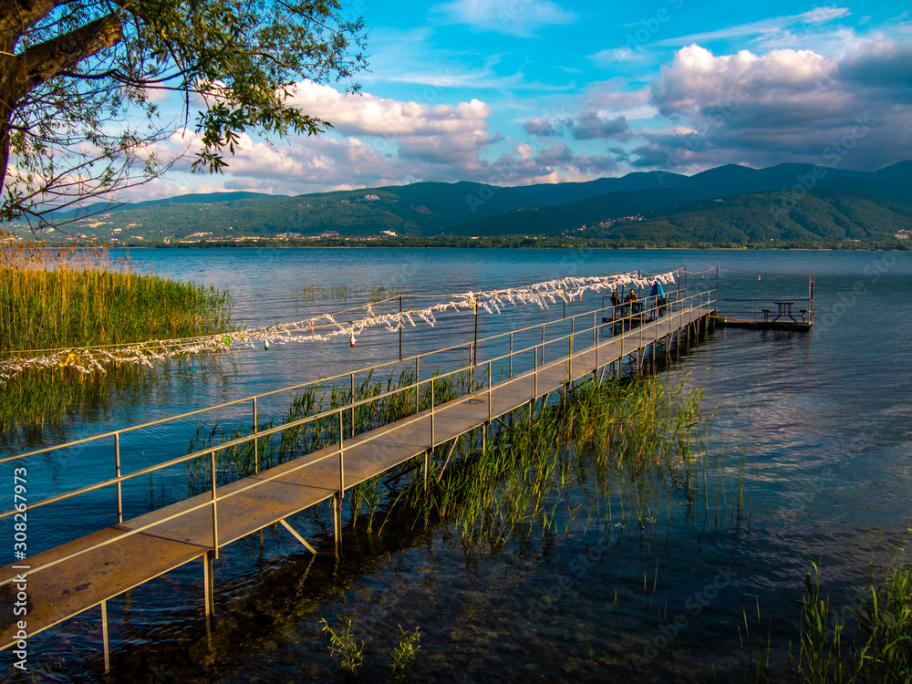
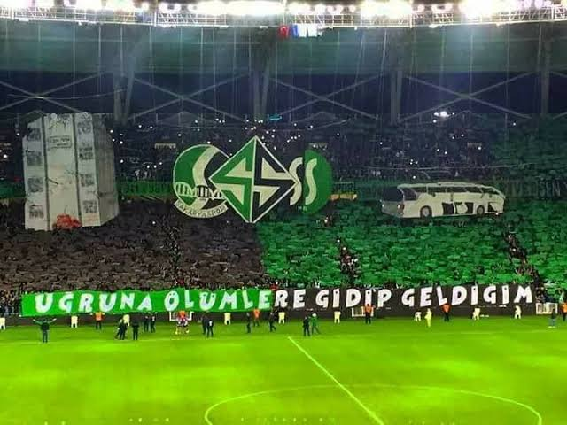

Deprem Müzesi
1999 Gölcük depremi sonrası Sakarya’da oluşturulan bu mürellehane, şehrin yaşadığı büyük felaketi anlatmakta ve toplumsal hafızayı diri tutmaktadır. Deprem bilincini artırmak için eğitici bir merkezdir.

Sapanca Gölü

Sapanca Gölü, Sakarya'nın en bilinen doğal miraslarındandır. Görsel güzelliği ve ekosistemiyle hem yerel halk hem de turistler için çekim merkezidir. Piknik, kamp ve bisiklet gibi etkinlikler için idealdir.
Sakaryaspor & Tatangalar
Sakaryaspor, şehrin futbol takımı olarak yıllardır halkın gurur kaynağıdır. Tatangalar ise takımın efsanevi taraftar grubudur. Bu grup, deplasman destekleri ve koreografileriyle ün kazanır.
